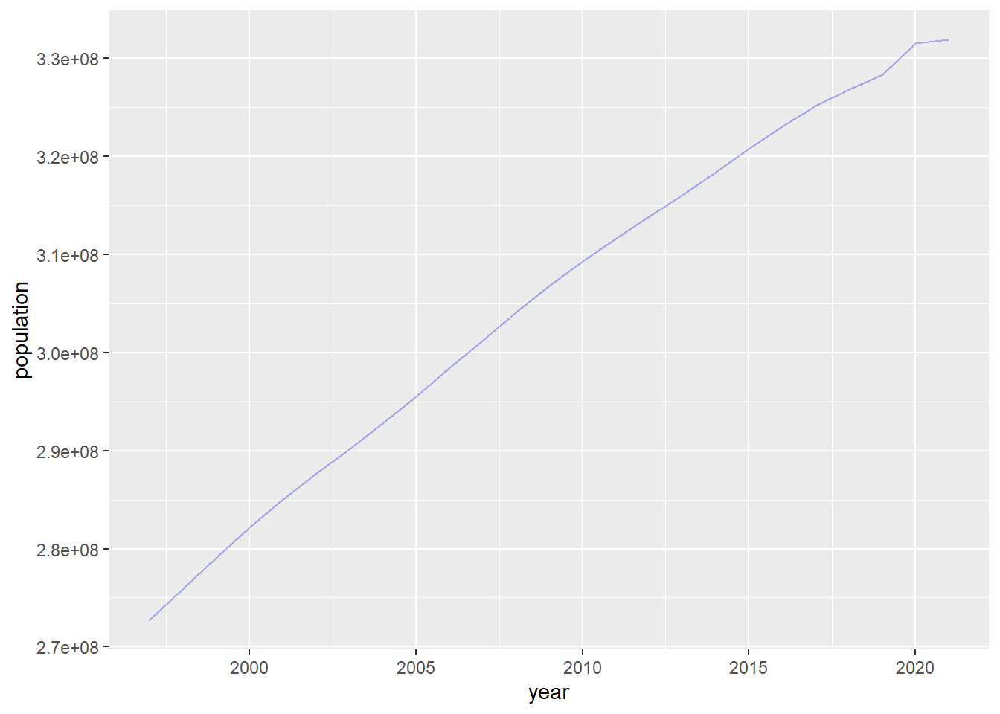
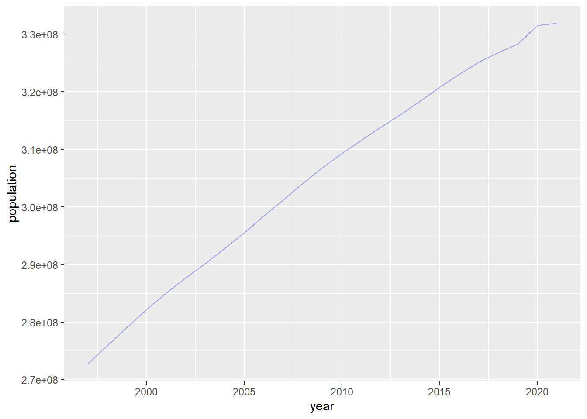
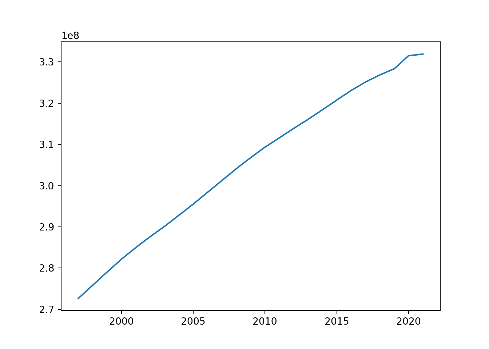

library('ggplot2')
r_wd = read.csv("world_bank_data.csv")
ggplot(
r_wd[r_wd$country_code == "USA", ],
aes(
year, population
)
) +
geom_line(
alpha = 0.3,
color = "blue2"
)
Using the {ggplot2} library to create a basic basic line chart
library('ggplot2')
r_wd = read.csv("world_bank_data.csv")
ggplot(
r_wd[r_wd$country_code == "USA", ],
aes(
year, population
)
) +
geom_line(
alpha = 0.3,
color = "blue2"
)
Using the {Matplotlib} library to create a basic basic line chart
import pandas as pd
import matplotlib.pyplot as plt
py_wd = (
pd.read_csv("world_bank_data.csv")
.query('country_code == "USA"')
)
plt.plot(py_wd["year"], py_wd["population"])
plt.show()
Using the {Plot} library to create a basic basic line chart
ojs_wd = FileAttachment("world_bank_data.csv").csv({typed: true})
Plot.plot({
y: {
grid: true
},
marks: [
Plot.line(
ojs_wd.map(d => d.country_code == "USA"),
{x: "year", y: "population"}
)
]
})